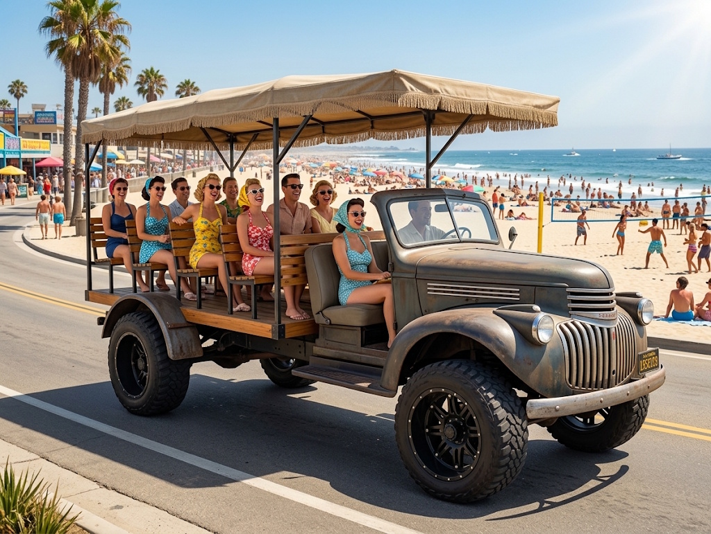
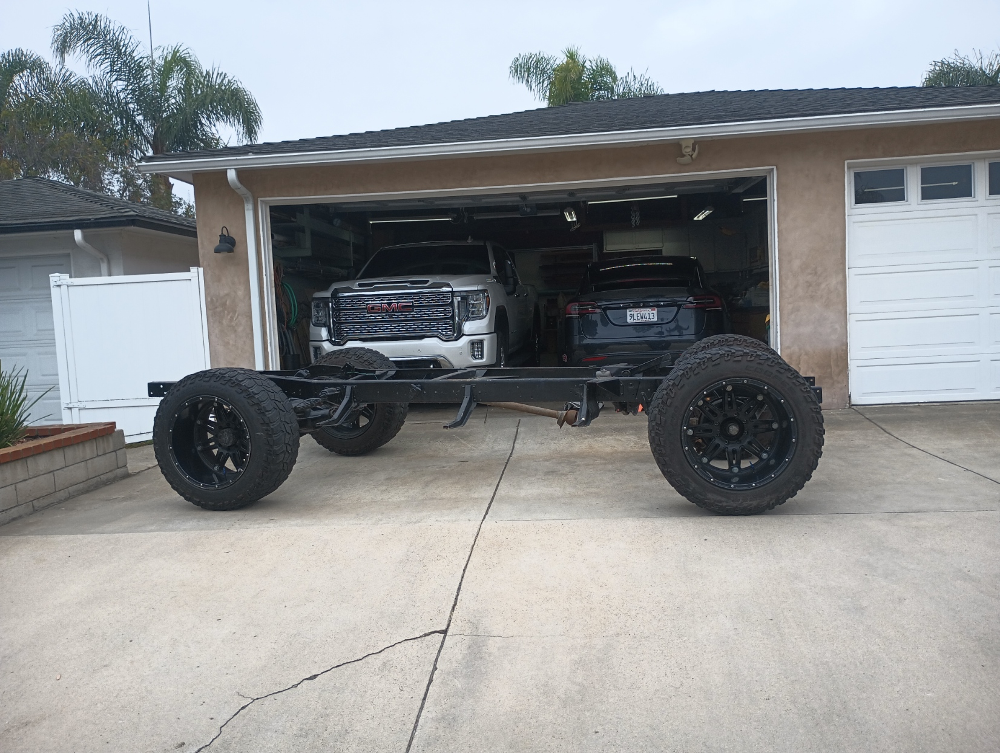
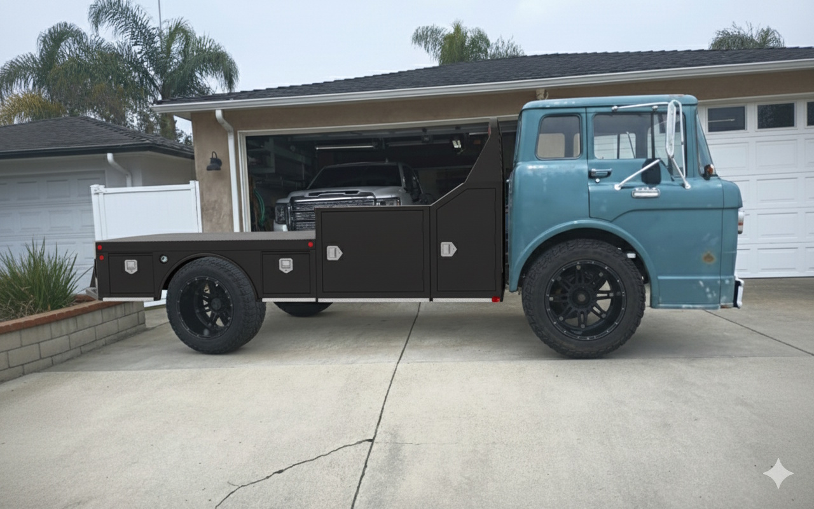
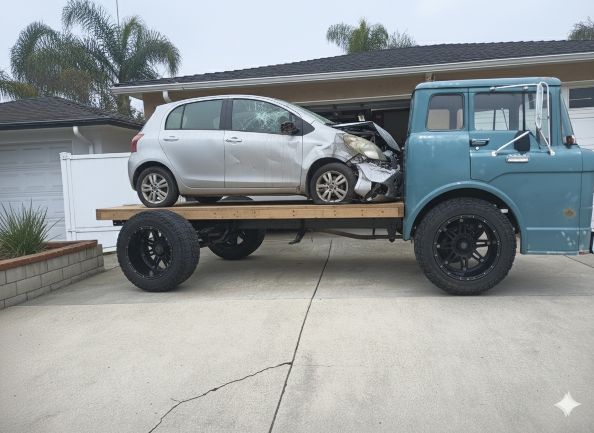
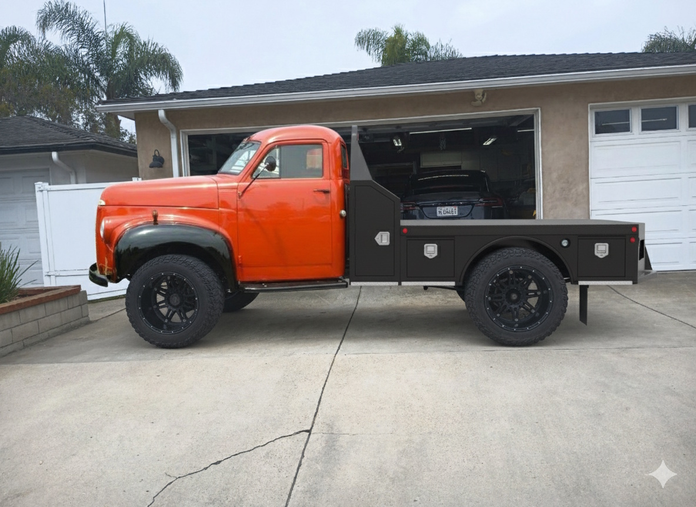

From a free 1-ton rolling chassis to a 1940s open-air beach cruiser, plus fantasy cab-fitment trials.

The Baseline Story: What started as a borrowed rolling frame to weigh a project body turned into a free acquisition. Built around a heavy-duty 1-ton foundation with a Dana 60 rear end, this platform's primary trajectory is a custom 1940s-style beach Surrey using whichever suitable vintage front body section is sourced first.
Hardware Foundation & Hero Concept

Chassis Origin: The free 1-ton frame with Dana 60 rear and custom rolling stock, ratchet-strapped during initial weigh-in and PNO registration.
Hero Concept: 1940s Chevrolet cab front section mated to a canopy top, pictured in a period-correct beach scene.
Fantasy Chassis Studies

Proportion Test: Evaluating a 1961 Ford C-Series cab-over-engine (COE) setup as a fantasy flatbed on the 1-ton chassis.

Gag Edit: The C-Series flatbed put to work hauling Omar's wrecked Yaris home after a post-tequila mishap.

Uncommon Cab Study: 1949 International Harvester KB-Series cab paired with a modern utility bed on the 1-ton platform.